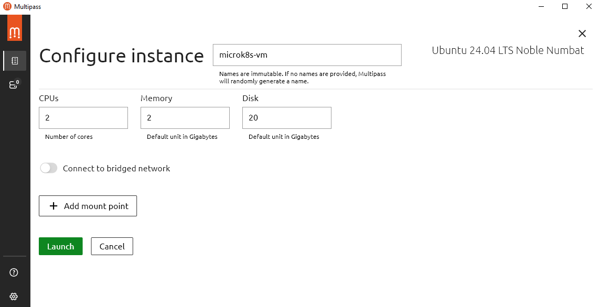
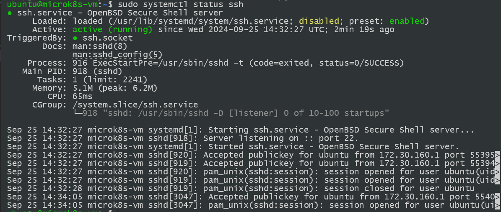
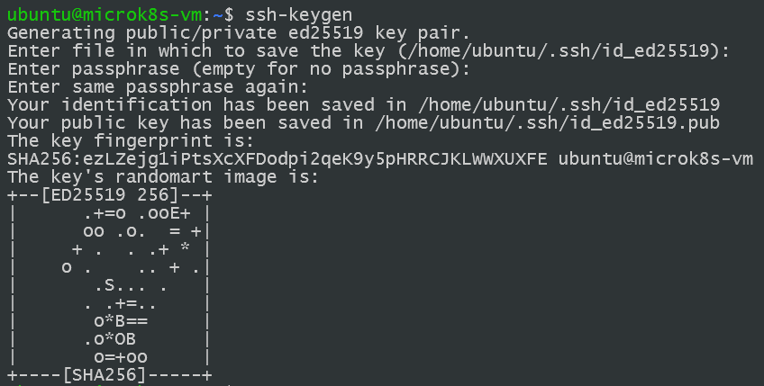

Virtuelles Environment
Das MicroK8s Cluster wird in einer VM von Multipass aufgesetzt.
Erstellen einer Multipass Instanz¶
Für das Aufsetzen eines MicroK8s Clusters wird auf der offiziellen MicroK8s Homepage Multipass empfohlen. Für die Windowsinstallation wird direkt auf ein Installer verlinkt, der ein existierenden MicroK8s Cluster aufsetzt. Es wird eine VM mit 4 CPUs, 4G RAM und 40 GB an Speicher. Für unsere Testzwecke sind die Ressourcen-Empfehlungen mehr als Ausreichend und haben entsprechend jeweils nur die Hälfte zugewiesen.

Nachdem die VM hochgefahren ist,
direkt über die Multipass GUI Shell mit der VM interagiert werden,
oder man kann direkt über ein Terminal mit der Instanz interagieren:
$ multipass start <name>
$ multipass shell <name>
$ multipass restart <name>
Für das erstellen einer neuen Instanz kann ebenfalls das Terminal verwendet werden:
$ multipass launch -n <name> -c <cpus> -m <memory> -d <disk space>
Es kann noch ein --image Argument übergeben werden, um ein spezifisches Image auszuwählen,
als Standard wird das neuste Ubuntu LTS System genutzt.
Wir arbeiten mit der Ubuntu Version 24.04.01.
Sobald die VM hochgefahren ist, wird eine SSH Verbindung in der VM eingerichtet, um sich auch außerhalb der VM mit dem Cluster zu verbinden.
Setup der SSH Verbindung¶
Zuerst muss apt geupdated werden und darauf der openssh-client installiert werden.
$ sudo apt update && sudo apt upgrade
$ sudo apt install openssh-client
Danach wird überprüft ob die ssh-Verbindung steht:
$ sudo systemctl status ssh

Somit läuft die SSH Verbindung auf der VM:
Active: active (running) since Wed 2024-09-25 14:32:27 UTC; 2min 19s ago.
In unserem fall müssen wir ssh in der Firewall noch aktiviren:
$ sudo ufw allow ssh
$ sudo systemctl enable ssh
Danach muss die IP Adresse der Linux-VM mit ifconfig ausgelesen werden:
$ sudo apt install net-tools
$ ifconfig
eth0: flags=4163<UP,BROADCAST,RUNNING,MULTICAST> mtu 1500
inet 172.30.169.161 netmask 255.255.240.0 broadcast 172.30.175.255
inet6 fe80::5054:ff:fee3:86bf prefixlen 64 scopeid 0x20<link>
ether 52:54:00:e3:86:bf txqueuelen 1000 (Ethernet)
RX packets 4606 bytes 1326666 (1.3 MB)
RX errors 0 dropped 0 overruns 0 frame 0
TX packets 4631 bytes 564837 (564.8 KB)
TX errors 0 dropped 0 overruns 0 carrier 0 collisions 0
In unsrem Fall ist die IP: 172.30.169.161. Somit kann sich über die IP und dem Username des Linux Rechners mit der VM verbunden werden: ssh ubuntu@172.30.169.161.
SSH-Authentifizierung¶
Damit die SSH-Verbindung aufgebaut werden kann,
muss entweder ein Username mit Password auf der VM Instanz gesetzt werden,
oder man verbindet sich über die Public Key Authentifizierung.
Wir haben uns für das letzte entscheiden,
um einerseits mehr mit SSH zu arbeiten und dies zu üben,
als auch für eine sichere und schnellere Verbindung.
Sobald die Keys gesetzt sind,
kann die Verbindung ohne Login aufgebaut werden.
$ ssh-keygen

Standardgemäß wird der SSH Key unter /<your_home/.ssh/id_rsa> gespeichert.
Außerdem kann ein Passphrase für die Keys angegeben werden.
Danach muss in der VM noch der öffentliche Schlüssel von den Rechnern hinzugefügt werden,
die sich mit der VM verbinden wollen.
OpenSHH Installation¶
In meinem Fall möchte ich mich von einem Windows Rechner in die VM Verbinden.
Entsprechend habe ich mit OpenSSH ebenfalls Schlüssel generiert.
Das Vorgehen funktioniert sehr ähnlich und wird auf der Microsoft Seite Erste Schritte mit OpenSSH für Windows erklärt:
In PowerShell:
$ Get-WindowsCapability -Online | Where-Object Name -like 'OpenSSH*'
$ Add-WindowsCapability -Online -Name OpenSSH.Client~~~~0.0.1.0
$ Add-WindowsCapability -Online -Name OpenSSH.Server~~~~0.0.1.0
Output:
$ Start-Service sshd $ Set-Service -Name sshd -StartupType 'Automatic' Zuletzt müssen noch die Ports in der WindowsFirewall freigegeben werden:
if (!(Get-NetFirewallRule -Name "OpenSSH-Server-In-TCP" -ErrorAction SilentlyContinue | Select-Object Name, Enabled)) {
Write-Output "Firewall Rule 'OpenSSH-Server-In-TCP' does not exist, creating it..."
New-NetFirewallRule -Name 'OpenSSH-Server-In-TCP' -DisplayName 'OpenSSH Server (sshd)' -Enabled True -Direction Inbound -Protocol TCP -Action Allow -LocalPort 22
} else {
Write-Output "Firewall rule 'OpenSSH-Server-In-TCP' has been created and exists."
}
Jetzt kann in einem Windows-Terminal mit $ ssh-keygen -t rsa ebenfalls ein Schlüsselpaar generiert werden.
Hinzufügen eines Öffentlichen SSH Schlüssel in Linux¶
Der öffentliche Schlüssel von dem Rechner,
der sich nun mit der Linux Instanz verbinden möchte,
muss kopiert werden und auf dem Linux Rechner hinterlegt werden.
Dafür muss das .ssh Verzeichnis in die File authorized_keys der öffentliche Schlüssel hinzugefügt werden und
die Rechte auf das File entsprechend gesetzt werden.
$ echo "<PUBLIC_KEY> >> ~/.ssh/authorized_keys"
$ chmod 600 ~/.ssh/authorized_keys
Danach muss lediglich ssh neugestartet werden und es kann versucht werden, eine SSH-Verbindung aufzubauen:
$ sudo systemctl restart ssh
Auf meinem Windows Rechner:
C:\Users\Tobby
λ ssh ubuntu@172.30.169.161
The authenticity of host '172.30.169.161 (172.30.169.161)' can t be established.
ECDSA key fingerprint is SHA256:5cuD09ZKcsANuY9RW5kp0gI+34fzbS/UYTxsNSx3+10.
Are you sure you want to continue connecting (yes/no/[fingerprint])? yes
Warning: Permanently added '172.30.169.161' (ECDSA) to the list of known hosts.
Welcome to Ubuntu 24.04.1 LTS (GNU/Linux 6.8.0-45-generic x86_64)
* Documentation: https://help.ubuntu.com
* Management: https://landscape.canonical.com
* Support: https://ubuntu.com/pro
System information as of Wed Sep 25 15:42:36 UTC 2024
System load: 0.08 Processes: 108
Usage of /: 10.2% of 18.33GB Users logged in: 1
Memory usage: 11% IPv4 address for eth0: 172.30.169.161
Swap usage: 0%
Expanded Security Maintenance for Applications is not enabled.
0 updates can be applied immediately.
Enable ESM Apps to receive additional future security updates.
See https://ubuntu.com/esm or run: sudo pro status
Last login: Wed Sep 25 14:34:05 2024 from 172.30.160.1